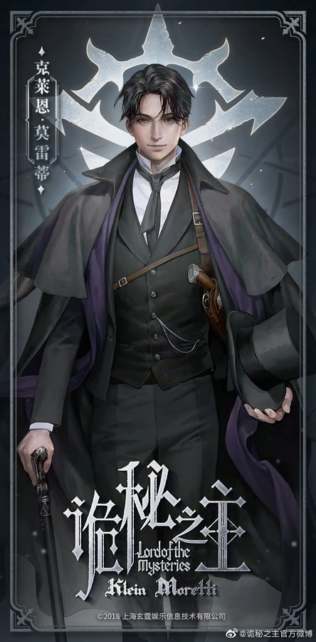

Klein Moretti is the main protagonist of Lord of Mysteries, and an important side character of Circle of Inevitability. He is the mysterious leader of the Tarot Club known as The Fool and a Transmigrator who comes from the modern era.
This page includes major-spoiler information from the linked source article. The fact fields below are transcribed from that article’s character infobox.Overview
Klein Moretti is the main protagonist of Lord of Mysteries, and an important side character of Circle of Inevitability. He is the mysterious leader of the Tarot Club known as The Fool and a Transmigrator who comes from the modern era.
The page uses the source article’s current naming, status, and progression terminology rather than the older roster shorthand.
Appearance
Role & affiliations
Aliases and titles
- Hero Bandit Black Emperor
- Sea God Kalvetua
- Sinbad Voluntier
- John Yode
- Clown Angel
- Mr. Clown
- Miracle Magician
- Blasphemer
- Daoist Zhou
Affiliations
- Tarot Club
- Church of the Fool
- New City of Silver
- New Moon City
- Abraham Family
- Rose School of Thought's Temperance Faction
- Church of the Sea God
- Life School of Thought
- Church of the Evernight Goddess
- Nighthawks
- Blackthorn Security Company
- Adventurer Association
Occupation(s)
- Great Old One
- God
- Founder and convener of the Tarot Club
- Transmigrator
- {{collapse|format=2|title=As Klein Moretti|content=
- History Graduate
- Nighthawk
- Fortune-Teller at the Divination Club
- Inspector of Tingen Police Department
- {{collapse|format=2|title=As Sherlock Moriarty|content=
- Detective
- Bodyguard
- Shareholder of Backlund Bike Company
- Informant of the Church of the God of Steam and Machinery
- {{collapse|format=2|title=As Gehrman Sparrow|content=
- Adventurer
- Bounty Hunter
- Volunteer
- The Fool's Oracle
- Angel of Redemption under The Fool
- {{collapse|format=2|title=As Dwayne Dantès|content=
- Merchant
- Founder and symbolic role director of the Loen Charity Bursary Foundation
- Leader of Numinous Episcopate faction in Backlund
- Shareholder of Coim Company
- Arms Dealer
- {{collapse|format=2|title=As Merlin Hermes|content=
- Wandering Magician
Religion(s)
- Church of the Fool
- Church of the Evernight Goddess
- Church of the God of Steam and Machinery
Pathway & abilities
Pathway: Lord of Mysteries
Recorded progression: Sequence Half Great Old One: Lord of Mysteries (Lord of Mysteries Pathway)
Compare sequence names and pathway symbols in the Pathways reference.
Image gallery

References & source notes
Profile facts were checked against the Klein Moretti article on the Lord of the Mysteries Wiki. The linked source is fan-maintained and may change; it also contains spoilers for Lord of Mysteries and Circle of Inevitability.
Local portrait and pathway images are retained from the supplied archive and are presented here as fan-reference media.